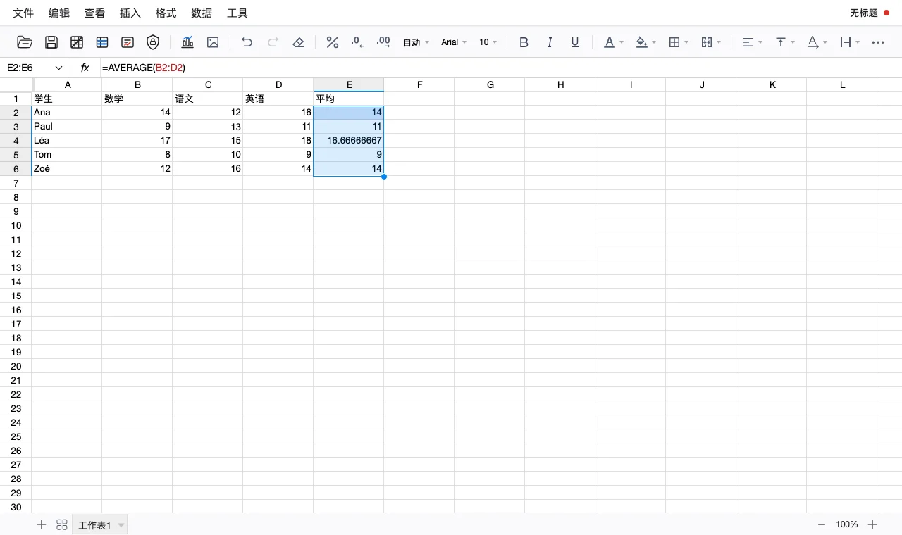

数字格式
格式改变数字的显示，不改变其值：计算保留所有小数位。
选择格式
格式 › 数字，或按钮栏的 自动 列表。
| 格式 | 示例 |
|---|---|
| 自动 | 1200.09 |
| 纯文本 | 1200.09，左对齐；输入保持为文本 |
| 数字 | 1200.09 |
| 百分比 | 120009.00%；0.25 变为 25.00% |
| 科学计数 | 1.20E+03 |
| 会计 | ¥(1,200.09) |
| 货币 | ¥1,200.09 |
| 日期、时间、日期时间 | 用于日期：2017-11-29、3:00 PM、15:00… |
货币符号由界面语言决定。
| 按钮 | 效果 |
|---|---|
| 百分比 | |
| 减少一位小数 | |
| 增加一位小数 |
这些按钮也适用于列表中的数字。要对值本身取整，请使用 ROUND。
自定义格式
格式 › 数字 › 自定义数字格式…：选择建议的格式，或编写代码。预览显示结果；格式指南 说明各符号；应用 应用到选区。

| 符号 | 作用 | 代码 | 1234.5 显示为 |
|---|---|---|---|
0 | 一位数字，包括零 | 0.00 | 1234.50 |
# | 需要时才显示的数字 | #.## | 1234.5 |
, | 千位分组 | #,##0 | 1,235 |
% | 百分比 | 0% | 123450% |
"文本" | 文本、单位 | 0.0 "m" | 1234.5 m |
E+00 | 科学记数法 | 0.00E+00 | 1.23E+03 |
; | 正数、负数、零、文本的格式 | 0;-0;"无" | 1235 |
[Red] | 颜色 | 0;[Red]-0 | 负数为红色 |
代码使用该语言的分隔符键入；窗口显示保存时的形式（#,##0.00），与 Excel 相同。
日期与时间
| 代码 | 2026 年 8 月 29 日 14:30 |
|---|---|
dd/MM/yyyy | 29/08/2026 |
d mmm yyyy | 29 Aug 2026 |
dddd d mmmm yyyy | Saturday 29 August 2026 |
hh:mm | 14:30 |
dd/MM/yyyy hh:mm | 29/08/2026 14:30 |
月份和星期的名称以英文显示。
单位
在 单位 下有 0.00 "V"、0.00 "Ω"、0.00 "mm" 等格式：单元格仍是数字，可以参与计算。